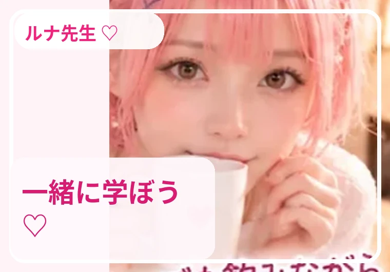
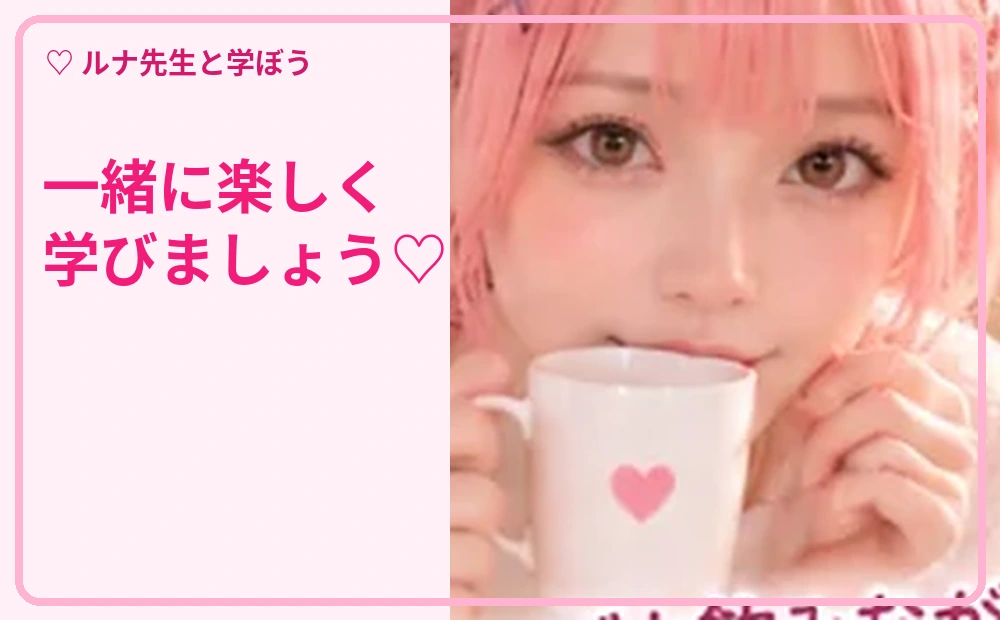

第1回 基本操作
ルナ先生と一緒に、実際の操作を順番に学びましょう。質問文はコピーして使えます。

STEP 01
ChatGPTとは？
ルナ先生からの解説 🌸 ChatGPTは、文章で質問したり、相談したり、文章を作ったりできるAIです。正確さが必要な内容は必ず確認し、個人情報や秘密情報は入力しないようにしましょう。
🖱️ 操作の手順
- ブラウザーで chatgpt.com を開きます。
- ログインすると、会話の保存や利用可能な機能を使えます。
- 画面下の入力欄に質問を書き、送信ボタンまたはEnterキーで送ります。
- 返事を読んで、分からないところは同じ会話で追加質問しましょう。
📋 そのまま使える質問文
ChatGPTを初めて使います。小学生にも分かる言葉で、できることを5つ教えてください。

STEP 02
上手な質問の4要素
ルナ先生からの解説 🌸 「目的」「背景」「条件」「出力形式」を伝えると、求める回答に近づきやすくなります。
🖱️ 操作の手順
- まず何をしたいかを書きます。
- 自分の状況や対象読者を説明します。
- 文字数・口調・禁止事項などを指定します。
- 箇条書き・表・手順など希望の形を指定します。
📋 そのまま使える質問文
あなたはパソコン講師です。Windows 11初心者向けに、写真の整理方法を5手順で、専門用語を説明しながら教えてください。

STEP 03
会話を続けて改善する
ルナ先生からの解説 🌸 一度で完成させようとせず、返答に追加条件を出して調整するのがコツです。
🖱️ 操作の手順
- 回答が難しければ「もっと簡単に」と頼みます。
- 長すぎれば「要点を3つに」と伝えます。
- 例が欲しければ「具体例を2つ」と続けます。
- 話題が大きく変わるときは新しいチャットを作ると整理しやすくなります。
📋 そのまま使える質問文
今の説明を初心者向けに言い換えて、実際の操作例を2つ加えてください。

STEP 04
便利な画面操作
ルナ先生からの解説 🌸 会話履歴、添付、コピー、音声などは利用環境やプランで表示が異なる場合があります。
🖱️ 操作の手順
- 画面左側から過去の会話を開けるか確認します。
- 必要なら新しいチャットを開始します。
- 回答のコピーボタンで文章をコピーします。
- ファイルや写真を使う場合は入力欄付近の追加ボタンを探します。
📋 そのまま使える質問文
この画面で使える機能を、初心者向けチェックリストで説明してください。